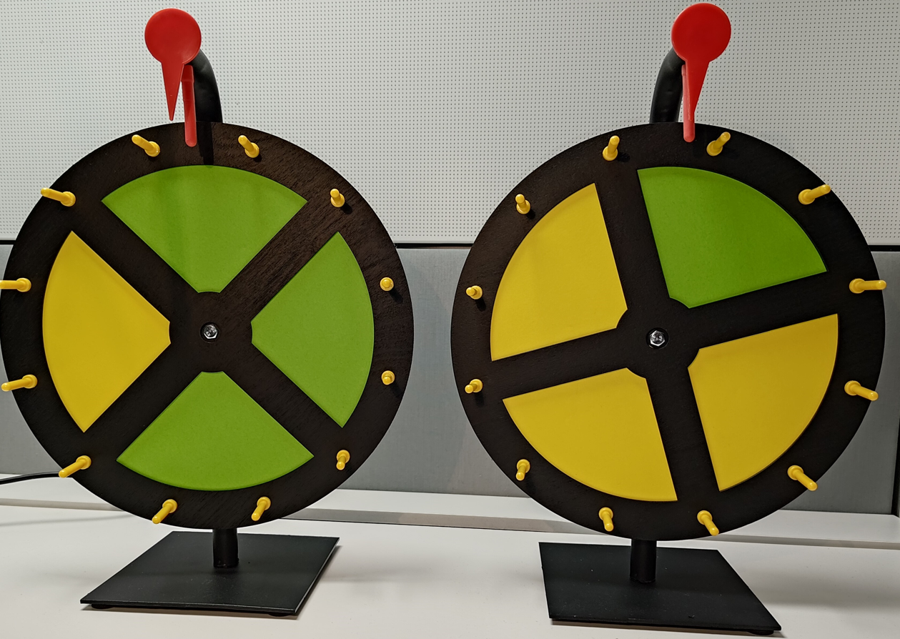
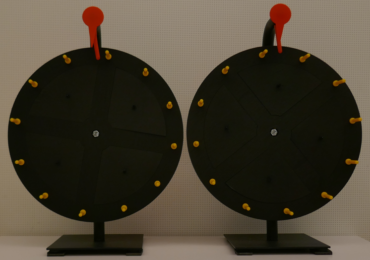
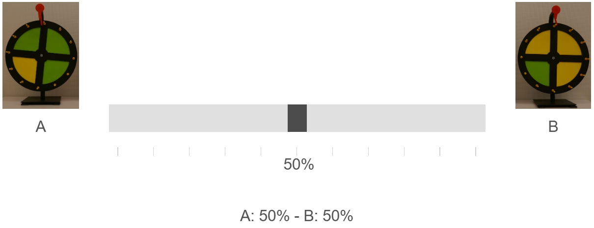

Instructions for the experiment
The two wheels of fortune
In this experiment we use two different "wheels of fortune". Each wheel is divided evenly into four fields. Wheel A (the "green wheel") is three quarters green and one quarter yellow. Wheel B (the "yellow wheel") is three quarters yellow and one quarter green. This setup is very important for your decisions during the experiment.

During the experiment the colored fields of the wheels are covered, as in the picture below.

How it works
The experiment has 6 rounds. In each round there is a "selected wheel": either Wheel A or Wheel B. Because the fields are covered, you cannot see which wheel is the selected wheel.
In each round you see 8 spins. After each spin, the field that the red pointer at the top of the wheel points to is revealed. The sequence of spins was fixed in advance.
Which wheel is the selected wheel of a round is determined at random by the computer, in line with the revealed fields: the more green fields are revealed, the more likely Wheel A is the selected wheel; the more yellow fields, the more likely Wheel B. The probabilities are exactly the same as if one of the two wheels had been selected at random (50% – 50%) at the start of the round and then spun. So the revealed fields help you judge which wheel is the selected wheel.
Because only one field is revealed at a time, a green or yellow field never tells you for certain which wheel is the selected one. The pointer may also point to the same field several times; you do not know whether that is the case.
The slider
Before the first spin and after every spin, you use a slider to tell us how likely you think it is that the selected wheel is Wheel A (green wheel) or Wheel B (yellow wheel). Wheel A is shown to the left of the slider, Wheel B to the right.

- Middle: you think both wheels are equally likely (50% each).
- To the left: you think Wheel A is more likely. The further left, the more certain you are. All the way left means "A: 100% - B: 0%".
- To the right: you think Wheel B is more likely. The further right, the more certain you are. All the way right means "A: 0% - B: 100%".
- Display: above the slider you see the probabilities for Wheel A and B. They always add up to 100%.
Payment
You receive a base payment of $6.00 for taking part and an additional $3.00 for completing the questionnaire at the end.
Bonus for your probability estimate
At the end of the experiment, one of the six rounds is chosen at random. In that round, one of your nine estimates is chosen at random: before the first spin or after any of the eight spins. Each round and each estimate within it has the same chance of being chosen. The chosen estimate is used for a chance to win $10.00.
Your chance of winning is highest if you always set the slider to the probability that you yourself believe is correct.
The payment rule
There are two ways to win $10.00:
Your estimate tells the computer which option to use.
The computer draws a random percentage between 0% and 100%, with all values equally likely. This is the lottery's chance of winning. Your answer does not change this draw, and the draw does not depend on which wheel is selected.
- If your estimate for Wheel A is higher than the lottery chance, the computer uses the wheel option.
- If the lottery chance is higher than your estimate, the computer uses the lottery option, with the chance it drew. A separate random draw then decides whether you win.
- If they are equal, the computer uses the wheel option.
An example
Suppose you report A: 70% — B: 30%.
| The computer draws | Option used | How you win $10.00 |
|---|---|---|
| 40% | Wheel option | You win if Wheel A is the selected wheel. If it is Wheel B, you receive $0. |
| 90% | Lottery option | You have a 90% chance of winning, whichever wheel is selected. |
The 70% in this example is just an example, not a suggested answer.
Your own best estimate makes the computer use the option that, according to your estimate, gives you the greater chance of winning. If the chances are equal, either option is equally good. Reporting a higher or lower number can make it use the option you think is worse.
See the full choice list for the 70% example
This list illustrates the payment rule at whole percentages. For an estimate of 70%, the wheel option is used through 70%; above 70%, the lottery option is used. Your estimate fills in these choices automatically.
The computer's random percentage can also fall between the whole percentages shown. Both options pay $0 when you do not win.
| Lottery chance | Wheel option | Lottery option | Option used |
|---|---|---|---|
| 0% | $10.00 if Wheel A is selected | 0% chance of $10.00 | Wheel option |
| 1% | $10.00 if Wheel A is selected | 1% chance of $10.00 | Wheel option |
| 2% | $10.00 if Wheel A is selected | 2% chance of $10.00 | Wheel option |
| 3% | $10.00 if Wheel A is selected | 3% chance of $10.00 | Wheel option |
| 4% | $10.00 if Wheel A is selected | 4% chance of $10.00 | Wheel option |
| 5% | $10.00 if Wheel A is selected | 5% chance of $10.00 | Wheel option |
| 6% | $10.00 if Wheel A is selected | 6% chance of $10.00 | Wheel option |
| 7% | $10.00 if Wheel A is selected | 7% chance of $10.00 | Wheel option |
| 8% | $10.00 if Wheel A is selected | 8% chance of $10.00 | Wheel option |
| 9% | $10.00 if Wheel A is selected | 9% chance of $10.00 | Wheel option |
| 10% | $10.00 if Wheel A is selected | 10% chance of $10.00 | Wheel option |
| 11% | $10.00 if Wheel A is selected | 11% chance of $10.00 | Wheel option |
| 12% | $10.00 if Wheel A is selected | 12% chance of $10.00 | Wheel option |
| 13% | $10.00 if Wheel A is selected | 13% chance of $10.00 | Wheel option |
| 14% | $10.00 if Wheel A is selected | 14% chance of $10.00 | Wheel option |
| 15% | $10.00 if Wheel A is selected | 15% chance of $10.00 | Wheel option |
| 16% | $10.00 if Wheel A is selected | 16% chance of $10.00 | Wheel option |
| 17% | $10.00 if Wheel A is selected | 17% chance of $10.00 | Wheel option |
| 18% | $10.00 if Wheel A is selected | 18% chance of $10.00 | Wheel option |
| 19% | $10.00 if Wheel A is selected | 19% chance of $10.00 | Wheel option |
| 20% | $10.00 if Wheel A is selected | 20% chance of $10.00 | Wheel option |
| 21% | $10.00 if Wheel A is selected | 21% chance of $10.00 | Wheel option |
| 22% | $10.00 if Wheel A is selected | 22% chance of $10.00 | Wheel option |
| 23% | $10.00 if Wheel A is selected | 23% chance of $10.00 | Wheel option |
| 24% | $10.00 if Wheel A is selected | 24% chance of $10.00 | Wheel option |
| 25% | $10.00 if Wheel A is selected | 25% chance of $10.00 | Wheel option |
| 26% | $10.00 if Wheel A is selected | 26% chance of $10.00 | Wheel option |
| 27% | $10.00 if Wheel A is selected | 27% chance of $10.00 | Wheel option |
| 28% | $10.00 if Wheel A is selected | 28% chance of $10.00 | Wheel option |
| 29% | $10.00 if Wheel A is selected | 29% chance of $10.00 | Wheel option |
| 30% | $10.00 if Wheel A is selected | 30% chance of $10.00 | Wheel option |
| 31% | $10.00 if Wheel A is selected | 31% chance of $10.00 | Wheel option |
| 32% | $10.00 if Wheel A is selected | 32% chance of $10.00 | Wheel option |
| 33% | $10.00 if Wheel A is selected | 33% chance of $10.00 | Wheel option |
| 34% | $10.00 if Wheel A is selected | 34% chance of $10.00 | Wheel option |
| 35% | $10.00 if Wheel A is selected | 35% chance of $10.00 | Wheel option |
| 36% | $10.00 if Wheel A is selected | 36% chance of $10.00 | Wheel option |
| 37% | $10.00 if Wheel A is selected | 37% chance of $10.00 | Wheel option |
| 38% | $10.00 if Wheel A is selected | 38% chance of $10.00 | Wheel option |
| 39% | $10.00 if Wheel A is selected | 39% chance of $10.00 | Wheel option |
| 40% | $10.00 if Wheel A is selected | 40% chance of $10.00 | Wheel option |
| 41% | $10.00 if Wheel A is selected | 41% chance of $10.00 | Wheel option |
| 42% | $10.00 if Wheel A is selected | 42% chance of $10.00 | Wheel option |
| 43% | $10.00 if Wheel A is selected | 43% chance of $10.00 | Wheel option |
| 44% | $10.00 if Wheel A is selected | 44% chance of $10.00 | Wheel option |
| 45% | $10.00 if Wheel A is selected | 45% chance of $10.00 | Wheel option |
| 46% | $10.00 if Wheel A is selected | 46% chance of $10.00 | Wheel option |
| 47% | $10.00 if Wheel A is selected | 47% chance of $10.00 | Wheel option |
| 48% | $10.00 if Wheel A is selected | 48% chance of $10.00 | Wheel option |
| 49% | $10.00 if Wheel A is selected | 49% chance of $10.00 | Wheel option |
| 50% | $10.00 if Wheel A is selected | 50% chance of $10.00 | Wheel option |
| 51% | $10.00 if Wheel A is selected | 51% chance of $10.00 | Wheel option |
| 52% | $10.00 if Wheel A is selected | 52% chance of $10.00 | Wheel option |
| 53% | $10.00 if Wheel A is selected | 53% chance of $10.00 | Wheel option |
| 54% | $10.00 if Wheel A is selected | 54% chance of $10.00 | Wheel option |
| 55% | $10.00 if Wheel A is selected | 55% chance of $10.00 | Wheel option |
| 56% | $10.00 if Wheel A is selected | 56% chance of $10.00 | Wheel option |
| 57% | $10.00 if Wheel A is selected | 57% chance of $10.00 | Wheel option |
| 58% | $10.00 if Wheel A is selected | 58% chance of $10.00 | Wheel option |
| 59% | $10.00 if Wheel A is selected | 59% chance of $10.00 | Wheel option |
| 60% | $10.00 if Wheel A is selected | 60% chance of $10.00 | Wheel option |
| 61% | $10.00 if Wheel A is selected | 61% chance of $10.00 | Wheel option |
| 62% | $10.00 if Wheel A is selected | 62% chance of $10.00 | Wheel option |
| 63% | $10.00 if Wheel A is selected | 63% chance of $10.00 | Wheel option |
| 64% | $10.00 if Wheel A is selected | 64% chance of $10.00 | Wheel option |
| 65% | $10.00 if Wheel A is selected | 65% chance of $10.00 | Wheel option |
| 66% | $10.00 if Wheel A is selected | 66% chance of $10.00 | Wheel option |
| 67% | $10.00 if Wheel A is selected | 67% chance of $10.00 | Wheel option |
| 68% | $10.00 if Wheel A is selected | 68% chance of $10.00 | Wheel option |
| 69% | $10.00 if Wheel A is selected | 69% chance of $10.00 | Wheel option |
| 70% | $10.00 if Wheel A is selected | 70% chance of $10.00 | Wheel option |
| 71% | $10.00 if Wheel A is selected | 71% chance of $10.00 | Lottery option |
| 72% | $10.00 if Wheel A is selected | 72% chance of $10.00 | Lottery option |
| 73% | $10.00 if Wheel A is selected | 73% chance of $10.00 | Lottery option |
| 74% | $10.00 if Wheel A is selected | 74% chance of $10.00 | Lottery option |
| 75% | $10.00 if Wheel A is selected | 75% chance of $10.00 | Lottery option |
| 76% | $10.00 if Wheel A is selected | 76% chance of $10.00 | Lottery option |
| 77% | $10.00 if Wheel A is selected | 77% chance of $10.00 | Lottery option |
| 78% | $10.00 if Wheel A is selected | 78% chance of $10.00 | Lottery option |
| 79% | $10.00 if Wheel A is selected | 79% chance of $10.00 | Lottery option |
| 80% | $10.00 if Wheel A is selected | 80% chance of $10.00 | Lottery option |
| 81% | $10.00 if Wheel A is selected | 81% chance of $10.00 | Lottery option |
| 82% | $10.00 if Wheel A is selected | 82% chance of $10.00 | Lottery option |
| 83% | $10.00 if Wheel A is selected | 83% chance of $10.00 | Lottery option |
| 84% | $10.00 if Wheel A is selected | 84% chance of $10.00 | Lottery option |
| 85% | $10.00 if Wheel A is selected | 85% chance of $10.00 | Lottery option |
| 86% | $10.00 if Wheel A is selected | 86% chance of $10.00 | Lottery option |
| 87% | $10.00 if Wheel A is selected | 87% chance of $10.00 | Lottery option |
| 88% | $10.00 if Wheel A is selected | 88% chance of $10.00 | Lottery option |
| 89% | $10.00 if Wheel A is selected | 89% chance of $10.00 | Lottery option |
| 90% | $10.00 if Wheel A is selected | 90% chance of $10.00 | Lottery option |
| 91% | $10.00 if Wheel A is selected | 91% chance of $10.00 | Lottery option |
| 92% | $10.00 if Wheel A is selected | 92% chance of $10.00 | Lottery option |
| 93% | $10.00 if Wheel A is selected | 93% chance of $10.00 | Lottery option |
| 94% | $10.00 if Wheel A is selected | 94% chance of $10.00 | Lottery option |
| 95% | $10.00 if Wheel A is selected | 95% chance of $10.00 | Lottery option |
| 96% | $10.00 if Wheel A is selected | 96% chance of $10.00 | Lottery option |
| 97% | $10.00 if Wheel A is selected | 97% chance of $10.00 | Lottery option |
| 98% | $10.00 if Wheel A is selected | 98% chance of $10.00 | Lottery option |
| 99% | $10.00 if Wheel A is selected | 99% chance of $10.00 | Lottery option |
| 100% | $10.00 if Wheel A is selected | 100% chance of $10.00 | Lottery option |
Random bonus
At the end of the experiment there is also a random bonus of $10.00, which you win with a probability of 50%.
Coin flip: which bonus is paid
At the end of the experiment, a fair coin flip decides whether you are paid either the bonus for your probability estimate or the random bonus. Each has a 50% chance of being chosen. You never receive both.
At the end of the experiment we tell you which wheel was the selected wheel in each round and give you a breakdown of your total payment.